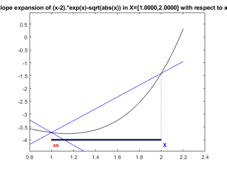
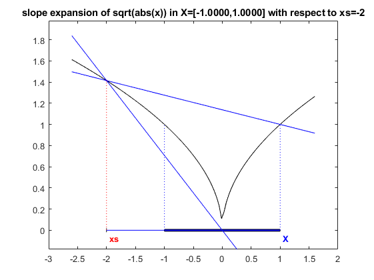
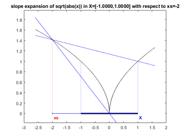

DEMOSLOPE Short demonstration of slopes
Contents
- Some sample applications of the slope toolbox
- Slope expansions
- Computing with slopes
- Graphical illustration of slopes
- Non-differentiable functions
- Computation of the Gamma function with slopes
- Computation of the range of the function g
- Slopes in several unknowns
- Solution of a nonlinear system
- Verified solution of a nonlinear system
- Verified solution using verifynlss
- Nonlinear systems with uncertain parameters
- A nonlinear function with large uncertainty
- Enjoy INTLAB
Some sample applications of the slope toolbox
For a demonstration of the slope toolbox, we choose wide intervals; therefore, the output is switched to infimum/supremum representation (see demointval):
setround(0) % set rounding to nearest format compact short infsup
Slope expansions
In order to use slope expansions, the expansion range and expansion point (interval) need to be identified and values have to be assigned. This is performed by the function "slopeinit", for example
u = slopeinit( [1;2] , infsup([1;2],[1.1;2.1]) )
slope intval center u.c = [ 1.0000, 1.0000] [ 2.0000, 2.0000] slope intval range u.r = [ 1.0000, 1.1001] [ 2.0000, 2.1001] slope intval slope u.s = [ 1.0000, 1.0000] [ 0.0000, 0.0000] [ 0.0000, 0.0000] [ 1.0000, 1.0000]
The length (number of rows) is the number of independent variables, in the example above two. Slopes are always of type intval. For the definition and use of slopes cf. Neumaier's book on interval analysis; here the improvements are implemented as in
S.M. Rump: Expansion and Estimation of the Range of Nonlinear Functions, Math. Comp. 65(216), pp. 1503-1512 (1996).
Computing with slopes
Automatic slope expansion is performed by operations with slope variables. For example,
x = slopeinit(3.5,midrad(3.5,1e-4)); y = exp(3*x-sqrt(x))
slope intval center y.c = 1.0e+003 * [ 5.5924, 5.5925] slope intval range y.r = 1.0e+003 * [ 5.5909, 5.5940] slope intval slope y.s = 1.0e+004 * [ 1.5280, 1.5285]
evaluates the expression using slopes with expansion point 3.5 and expansion interval 3.5+/-1e-4.
There is access to the center value, the range and the slope of y:
y.c y.r y.s
intval ans = 1.0e+003 * [ 5.5924, 5.5925] intval ans = 1.0e+003 * [ 5.5909, 5.5940] intval ans = 1.0e+004 * [ 1.5280, 1.5285]
When evaluating the expression for another argument, e.g. a vector argument, use the same statement as before with new values.
xs = [2;3]; x = slopeinit(xs,midrad(xs,1e-4)); y = exp(3*x-sqrt(x))
slope intval center y.c = 1.0e+003 * [ 0.0980, 0.0981] [ 1.4336, 1.4337] slope intval range y.r = 1.0e+003 * [ 0.0980, 0.0982] [ 1.4332, 1.4340] slope intval slope y.s = 1.0e+003 * [ 0.2595, 0.2596] [ 0.0000, 0.0000] [ 0.0000, 0.0000] [ 3.8864, 3.8876]
Graphical illustration of slopes
There is a simple graphic to demonstrate the behaviour of slope expansions for one-dimensional functions. The routine "slopeplot" assumes a function in one variable which can be evaluated for vectors, the expansion point and the expansion interval. For example,
format short slopeplot('(x-2).*exp(x)-sqrt(abs(x))',1,infsup(1,2))
shows a best possible upper slope, but an underestimated lower slope.
Non-differentiable functions
Functions to be handled by slopes need not be differentiable. An example is sqrt(abs(x)). Consider
slopeplot('sqrt(abs(x))',-2,infsup(-1,1))
 The slope is best possible, but the grid is not fine enough to catch the extreme point at zero. For some 10000 grid points the picture looks as follows:
slopeplot('sqrt(abs(x))',-2,infsup(-1,1),[],10000)
 Computation of the Gamma function with slopes
Consider the following example in one unknown. According to Stirling's formula it is for u -> inf,
1 1 139 571
Gamma(u) ~ C * ( 1 + --- + ----- - ------- - --------- + ... )
12u 2 3 4
288u 51840u 2488320u
with-u u-0.5 C = e u sqrt(2*pi) .
The following function evaluates Stirling's formula. It is also suited for vector input.
function y = g(u) C = exp(-u) .* ( u.^(u-0.5) ) * sqrt(2.0*pi) ; v = (((( -571.0/2488320.0 ./ u - 139.0/51840.0 ) ./ u ... + 1.0/288.0) ./ u ) + 1.0/12.0 ) ./ u + 1.0; y = C .* v;
A corresponding inline function is
format long e g = @(u) ( ( exp(-u) .* ( u.^(u-0.5) ) * sqrt(2.0*pi) ) .* ... ( (((( -571.0/2488320.0 ./ u - 139.0/51840.0 ) ./ u ... + 1.0/288.0) ./ u ) + 1.0/12.0 ) ./ u + 1.0 ) ) u = [ 3.5 61 5 ] g(u)
g =
function_handle with value:
@(u)((exp(-u).*(u.^(u-0.5))*sqrt(2.0*pi)).*(((((-571.0/2488320.0./u-139.0/51840.0)./u+1.0/288.0)./u)+1.0/12.0)./u+1.0))
u =
3.500000000000000e+00 6.100000000000000e+01 5.000000000000000e+00
ans =
3.323346278704310e+00 8.320987112733666e+81 2.399999414518977e+01
Computation of the range of the function g
Next calculate the range of the function g within a certain interval. This can be performed, for example, by straightforward interval evluation (naive interval arithmetic)
format long
X = infsup(4.1,4.2);
Y = g(X)
intval Y = [ 6.16134144515091, 8.57659626209615]
or by slopes:
xs = 4.1; X = infsup(4.1,4.2); Ys = g(slopeinit(xs,X))
slope intval center Ys.c = [ 6.81261843908868, 6.81261843908872] slope intval range Ys.r = [ 6.81261843908868, 7.93307713769863] slope intval slope Ys.s = [ 7.19570649775071, 11.20458698609909]
The range computed by the slope expansion is better by a factor 2 than naive interval arithmetic and less than 20 % overestimation of the true range:
diam(Y) diam(Ys.r) g(4.2)-g(4.1)
ans = 2.415254816945224 ans = 1.120458698609945 ans = 0.944066623111491
Note that Y or Ys.r is an inclusion of the range of g; for an inclusion of the range of the Gamma function an error term has to be added.
Slopes in several unknowns
Automatic slope expansion with several unknowns works the same way. Consider the following example by Broyden.
.5*sin(x1*x2) - x2/(4*pi) - x1/2 = 0 (1-1/(4*pi))*(exp(2*x1)-exp(1)) + exp(1)*x2/pi - 2*exp(1)*x1 ) = 0
with initial approximation [ .6 ; 3 ] and one solution [ .5 ; pi ]. The following function evaluates Broyden's function.
function y = f1(x) y = x; y(1) = .5*sin(x(1)*x(2)) - x(2)/(4*pi) - x(1)/2; y(2) = (1-1/(4*pi))*(exp(2*x(1))-exp(1)) + exp(1)*x(2)/pi - 2*exp(1)*x(1);
The first statement is for efficiency. It is generally better to fix the size of an array before assigning values to the components. An inline function is as follows (cf. demogradient):
f = @(x) ( [ .5*sin(x(1)*x(2)) - x(2)/(4*pi) - x(1)/2 ; ...
(1-1/(4*pi))*(exp(2*x(1))-exp(1)) + exp(1)*x(2)/pi - 2*exp(1)*x(1) ] )
f =
function_handle with value:
@(x)([.5*sin(x(1)*x(2))-x(2)/(4*pi)-x(1)/2;(1-1/(4*pi))*(exp(2*x(1))-exp(1))+exp(1)*x(2)/pi-2*exp(1)*x(1)])
Solution of a nonlinear system
The nonlinear system defined by Broyden's function can solved by Newton's procedure as follows (cf. demogradient):
x = gradientinit([ .6 ; 3 ]); for i=1:5 y = Broyden(x); x = x - y.dx\y.x; end x
gradient value x.x =
0.500000000000000
3.141592653589794
gradient derivative(s) x.dx =
1 0
0 1
For simplicity, we omitted the stopping criterion. Here, y.dx is the Jacobian, y.x the function value at x.x, and -y.dx\y.x is the correction obtained by solution of a linear system.
Verified solution of a nonlinear system
For verified solution of the nonlinear system, we need a correct definition of the function, see demogradient:
function y = f(x) y = x; c1 = typeadj( 1 , typeof(x) ); cpi = typeadj( midrad(3.14159265358979323,1e-16) , typeof(x) ); y(1) = .5*sin(x(1)*x(2)) - x(2)/(4*cpi) - x(1)/2; y(2) = (1-1/(4*cpi))*(exp(2*x(1))-exp(c1)) + exp(c1)*x(2)/cpi - 2*exp(c1)*x(1);
This code is implemented in the function demotest.m .
Verified solution using verifynlss
The nonlinear system defined by Broyden's function can be solved with verification and using slopes by:
y = verifynlss('demotest',[ .6 ; 3 ],'s')
intval y = [ 0.49999999999999, 0.50000000000001] [ 3.14159265358979, 3.14159265358980]
The first parameter gives the name of the function, in this case "demotest", such that "demotest(x)" evaluates the function at "x". For the last parameter being 's', slopes are used, otherwise gradients (the default).
We used slopes. However, the inclusion of the error with respect to an approximate solution is computed; therefore, the results for gradient and slope inclusion are identical. Note that use of gradients guarantees uniqueness of the zero within the computed interval, use of slope does not.
Nonlinear systems with uncertain parameters
Next we artificially introduce an interval parameter of large diameter in Broyden's function:
function y = demotest(x,radius)
y = x;
if nargin==1
radius = 1e-15;
end
cPi = typeadj( midrad(3.141592653589793,radius) , typeof(x) );
y(1) = .5*sin(x(1)*x(2)) - x(2)/(4*cPi) - x(1)/2;
y(2) = (1-1/(4*cPi))*(exp(2*x(1))-exp(1)) + exp(1)*x(2)/cPi - 2*exp(1)*x(1);This is to show that the range of applicability is larger for slopes than for gradients. For radius .04, both gradient expansion and slope expansion compute an inclusion (the extra parameter is passed to demotest):
radius = 4e-2; y1 = verifynlss('demotest',[ .6 ; 3 ],'g',[],radius) radius = 4e-2; y2 = verifynlss('demotest',[ .6 ; 3 ],'s',[],radius)
intval y1 = [ 0.47646930034291, 0.52353123158339] [ 3.08747741609458, 3.19469022252669] intval y2 = [ 0.48355358048748, 0.51644667496536] [ 3.09677912369125, 3.18538771940260]
The inclusion using slopes is better by 10 to 20 % in radius:
[ rad(y1) rad(y2) ]
ans = 0.023530965620235 0.016446547238938 0.053606403216051 0.044304297855670
A nonlinear function with large uncertainty
Finally, we enlarge the radius of the parameter cPi to 0.05 and try to calculate an inclusion:
radius = 5e-2; y1 = verifynlss('demotest',[ .6 ; 3 ],'g',[],radius) radius = 5e-2; y2 = verifynlss('demotest',[ .6 ; 3 ],'s',[],radius)
intval y1 = [ NaN, NaN] [ NaN, NaN] intval y2 = [ 0.47524226917744, 0.52475863766210] [ 3.08159688580248, 3.19999732354869]
Now, only the slope expansion is able to compute an inclusion, however, uniqueness is no longer proved.
Enjoy INTLAB
INTLAB was designed and written by S.M. Rump, head of the Institute for Reliable Computing, Hamburg University of Technology. Suggestions are always welcome to rump (at) tuhh.de